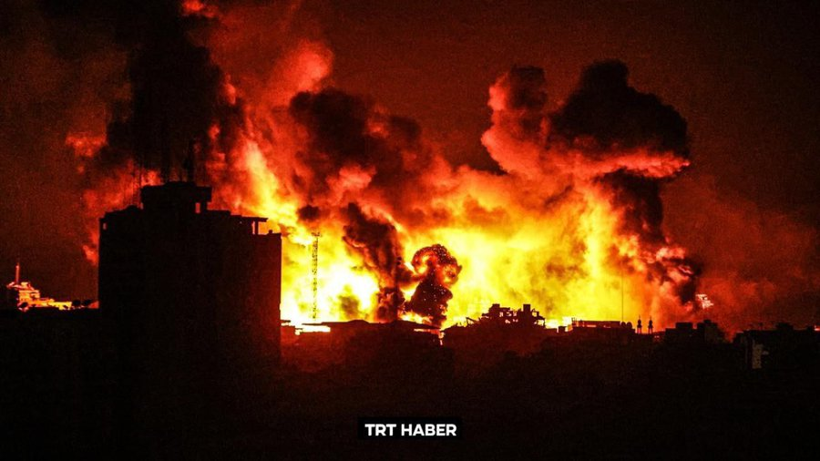
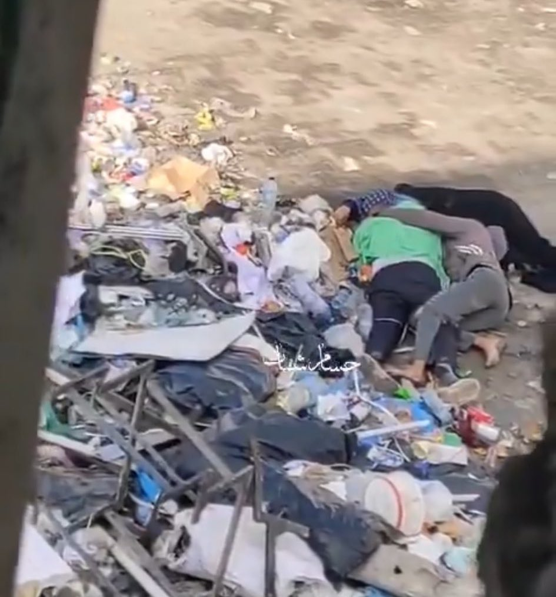
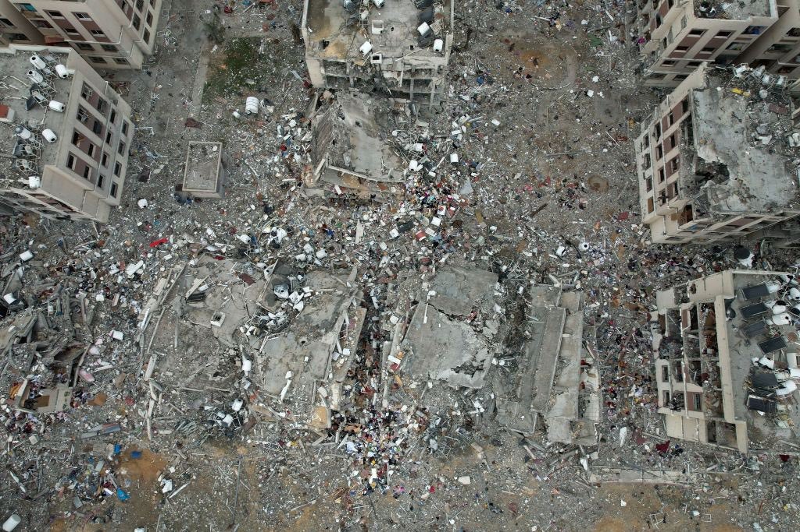

النكبة (1948)في عام 1948، شهدت فلسطين النكبة الكبرى، حيث تم تهجير حوالي 700,000 فلسطيني من قراهم ومدنهم. تزامن ذلك مع إعلان قيام دولة إسرائيل في 14 مايو 1948. سقط قطاع غزة تحت السيطرة الإسرائيلية بعد الحرب، حيث تدفق اللاجئون الفلسطينيون إلى القطاع، مما زاد عدد سكانه بشكل كبير.
الحكم المصري (1948-1967)بعد النكبة، تولت مصر إدارة قطاع غزة. بينما كانت هناك بعض الجهود لتحسين الوضع، استمرت التحديات اليومية للاجئين، بما في ذلك محدودية الحريات وعدم الاستقرار السياسي. كانت الحياة اليومية في غزة صعبة، مع نقص الموارد وفرص العمل.
حرب الأيام الستة (1967)في يونيو 1967، شنت إسرائيل هجومًا على عدة دول عربية، بما في ذلك مصر وسوريا والأردن، واحتلت الضفة الغربية وقطاع غزة ومرتفعات الجولان. أدى الاحتلال إلى تغييرات جذرية في حياة الفلسطينيين، حيث أصبحت غزة تحت السيطرة العسكرية الإسرائيلية المباشرة.
إجراءات الاحتلالمنذ ذلك الحين، بدأ الاحتلال الإسرائيلي في فرض قيود على الحركة، وبناء المستوطنات، وممارسة سياسات التهجير، مما أثر سلبًا على حياة السكان.
بداية الانتفاضة في ديسمبر 1987، انطلقت الانتفاضة الأولى (انتفاضة الحجارة) كاحتجاج على الاحتلال الإسرائيلي استخدم الفلسطينيون الحجارة لمواجهة الجنود الإسرائيليين.
أهمية الانتفاضة تعتبر الانتفاضة الأولى نقطة تحول مهمة، حيث بدأ الفلسطينيون في التعبير عن مطالبهم بالحرية والاستقلال. أدت إلى زيادة الوعي العالمي بالقضية الفلسطينية وفرضت على المجتمع الدولي التفكير في الوضع في الأراضي المحتلة.
تعتبر اتفاقات أوسلو علامة فارقة في تاريخ الصراع الفلسطيني الإسرائيلي، حيث جاءت نتيجة جهود دبلوماسية مكثفة بين منظمة التحرير الفلسطينية، التي كانت تمثل الشعب الفلسطيني، والدولة الإسرائيلية. تم التوقيع على الاتفاقات في 13 سبتمبر 1993، بحضور الرئيس الأمريكي بيل كلينتون وزعماء فلسطينيين وإسرائيليين، حيث تم تبادل التحيات والتوقيع أمام الكاميرات في حديقة البيت الأبيض.
نصت اتفاقات أوسلو على إنشاء السلطة الفلسطينية، وهي هيئة ذاتية الحكم تهدف إلى إدارة الشؤون المدنية في مناطق معينة من الضفة الغربية وقطاع غزة. كان من المفترض أن تكون هذه السلطة خطوة نحو إقامة دولة فلسطينية، وقد أُعلن عن فترة انتقالية تستمر خمس سنوات، تتيح للفلسطينيين إدارة شؤونهم المحلية وتحقيق بعض الحقوق السياسية.
أحد أهم النتائج التي نتجت عن اتفاقات أوسلو هو الاعتراف المتبادل بين منظمة التحرير الفلسطينية وإسرائيل. كان هذا بمثابة تحول في موقف كل من الطرفين، حيث اعتبرت إسرائيل أن منظمة التحرير هي الممثل الشرعي الوحيد للشعب الفلسطيني، بينما اعترفت منظمة التحرير بحق إسرائيل في الوجود.
ومع ذلك، واجهت عملية السلام تحديات كبيرة منذ البداية. لم يتم تنفيذ معظم الالتزامات المنصوص عليها في الاتفاق، مما أدى إلى تفاقم الصراع. على سبيل المثال، استمرت إسرائيل في توسيع المستوطنات في الأراضي المحتلة، وهو ما اعتبره الفلسطينيون خرقًا واضحًا للاتفاقات. كما أن التوترات بين الفصائل الفلسطينية كانت تزداد، مما أثر على وحدة الصف الفلسطيني.
وفي عام 1995، تم التوقيع على اتفاقية "أوسلو 2" التي قسمت الضفة الغربية إلى مناطق (أ، ب، ج)، مما أعطى الفلسطينيين سيطرة أكبر على بعض المناطق، بينما احتفظت إسرائيل بالسيطرة الأمنية على معظم المناطق. لكن هذه التقسيمات أثارت انتقادات كثيرة، حيث اعتبرها كثيرون فشلاً في تحقيق الاستقلال المنشود.
تأثرت جهود السلام بشكل كبير بموجات العنف المتكررة، بما في ذلك الانتفاضة الثانية التي اندلعت في عام 2000. هذه الانتفاضة كانت رد فعل على تدهور الأوضاع وأيضًا بسبب إحباط الفلسطينيين من بطء عملية السلام وعدم تنفيذ الالتزامات من قبل إسرائيل. كانت هناك محاولات لاحقة لإحياء عملية السلام، ولكنها كانت تفتقر إلى الدعم الفعلي من كلا الجانبين، مما أدى إلى تفاقم الأوضاع في الأراضي المحتلة. استمر الوضع في غزة والضفة الغربية في التدهور، مما أعطى انطباعًا بأن اتفاقات أوسلو لم تكن سوى نقطة انطلاق، حيث لم يتمكن الطرفان من تحقيق السلام المستدام، مما زاد من حدة الصراع والمعاناة اليومية للسكان الفلسطينيين.
جاءت الانتفاضة الثانية، المعروفة أيضًا باسم "انتفاضة الأقصى"، كنتيجة مباشرة للإحباط المتزايد بين الفلسطينيين من عدم تحقيق تقدم حقيقي في عملية السلام. اندلعت الانتفاضة في سبتمبر 2000 بعد زيارة أرييل شارون، الذي كان آنذاك زعيم المعارضة الإسرائيلية، إلى المسجد الأقصى، مما أثار مشاعر الغضب لدى الفلسطينيين. تجسدت الانتفاضة في مظاهرات واسعة النطاق واشتباكات مع قوات الاحتلال، حيث استخدم الفلسطينيون الحجارة كرمز للمقاومة ضد القوات الإسرائيلية. كانت الانتفاضة الثانية أكثر دموية مقارنة بالانتفاضة الأولى، حيث سقط العديد من القتلى والجرحى من كلا الجانبين.
بدأت القوات الإسرائيلية بتنفيذ عمليات عسكرية واسعة النطاق في المناطق الفلسطينية، بما في ذلك اجتياح المدن والقرى. هذه العمليات أدت إلى تدمير العديد من المنازل والبنية التحتية، مما زاد من تفاقم الوضع الإنساني في غزة والضفة الغربية. في عام 2002، أطلقت إسرائيل "عملية الدرع الواقي"، وهي حملة عسكرية تستهدف تدمير البنية التحتية للمقاومة الفلسطينية. وشهدت هذه الحملة زيادة كبيرة في أعداد الضحايا من المدنيين الفلسطينيين، مما أثار انتقادات واسعة على الساحة الدولية.
خلال هذه الفترة، أصبح الصراع أكثر تعقيدًا، حيث نشأت فصائل مسلحة جديدة وزادت من نشاطها، مما أضاف مزيدًا من التعقيد على المشهد. في الوقت نفسه، انقسمت الفصائل الفلسطينية، حيث ظهرت حركة حماس كقوة رئيسية في مقاومة الاحتلال، مما أدى إلى تنافس متزايد بينها وبين حركة فتح. في عام 2005، أعلنت الحكومة الإسرائيلية عن خطتها للانسحاب من غزة، وهو ما تم في أغسطس من نفس العام. ومع ذلك، لم يُحسن انسحاب إسرائيل الأوضاع الإنسانية، بل أدى إلى تفاقم الأزمات الاقتصادية والاجتماعية.
بعد الانسحاب الإسرائيلي من غزة، شهدت الساحة الفلسطينية تحولًا جديدًا في المشهد السياسي. في عام 2006، أجريت الانتخابات التشريعية الفلسطينية، حيث فازت حركة حماس بالأغلبية. إلا أن هذا الفوز أثار توترات سياسية حادة بين حماس وفتح، التي كانت تدير السلطة الفلسطينية. في يونيو 2007، تفجرت الاشتباكات المسلحة بين أنصار حماس وفتح، مما أدى إلى سيطرة حماس على غزة بالكامل. أصبح القطاع تحت حكم حماس، بينما استمرت فتح في السيطرة على الضفة الغربية. هذا الانقسام أضعف الجهود لتحقيق الوحدة الوطنية الفلسطينية، وأدى إلى تفاقم الأوضاع الإنسانية في القطاع.
بعد سيطرة حماس على غزة، فرضت إسرائيل حصارًا خانقًا على القطاع، مما أثر بشكل كبير على حياة السكان. الحصار حال دون دخول الكثير من السلع الأساسية، بما في ذلك المواد الغذائية والأدوية، وأدى إلى تدهور الظروف الإنسانية. نتيجة لهذا الحصار، انخفض مستوى المعيشة بشكل كبير، حيث يعاني نحو 80% من سكان غزة من الفقر ويعتمدون على المساعدات الإنسانية. كما تدهورت البنية التحتية، حيث تأثرت المياه والكهرباء بشكل كبير، مما جعل الحياة اليومية صعبة للغاية.
اشتدت التوترات في المنطقة بشكل ملحوظ، وبدأت بوادر الأزمة تتصاعد تدريجيًا لتبلغ ذروتها. كانت القدس، وتحديدًا المسجد الأقصى، في قلب هذا التوتر، إذ كثفت السلطات الإسرائيلية من اقتحاماتها للمسجد، خاصة خلال الأعياد اليهودية، حيث قام المستوطنون بزيارات متكررة تحت حماية القوات الإسرائيلية. مثلت هذه الاقتحامات تهديدًا لمكانة المسجد الأقصى، وأثارت غضب الفلسطينيين الذين شعروا بتعدٍ على حقوقهم الدينية والوطنية، خاصة أن الأقصى يُعتبر رمزًا للهوية الفلسطينية والإسلامية.
في الضفة الغربية، شهدت القرى الفلسطينية تصاعدًا في اعتداءات المستوطنين، الذين قاموا بمهاجمة القرى، وتخريب الممتلكات، والاستيلاء على الأراضي الزراعية. هذه الهجمات تمت غالبًا بحماية من الجيش الإسرائيلي، مما زاد من الشعور بالعجز والغضب لدى الفلسطينيين. الاعتداءات لم تقتصر على المزارع والقرى فقط، بل تزايدت عمليات الاعتقال بحق الشباب الفلسطيني، خاصة النشطاء، تحت ذرائع "مكافحة الإرهاب". كانت هذه العمليات موجهة ليس فقط ضد عناصر المقاومة، بل شملت حتى شخصيات مدنية بارزة، ما خلق حالة من التوتر والاستياء في المجتمع الفلسطيني.
وفي قطاع غزة، ازدادت الأوضاع الإنسانية سوءًا بشكل مقلق. الحصار الإسرائيلي المستمر منذ سنوات طويلة أدى إلى بطالة مرتفعة جدًا، ونقص في الخدمات الأساسية من كهرباء وماء وأدوية، مما جعل الحياة اليومية أشبه بأزمة دائمة، دون وجود أفق للتحسن. كان هذا الضغط الهائل على سكان غزة يتزايد يومًا بعد يوم، في ظل معاناة مستمرة، جعلت المقاومة تواجه ضغوطًا شعبية متزايدة للرد على الأوضاع، خاصةً مع تراجع الدعم الدولي وقلة الاهتمام بالمعاناة المستمرة.
على الصعيد الإقليمي، كانت الأوضاع السياسية تلقي بظلالها على الوضع الفلسطيني، فقد شهدت عدة عواصم عربية وإسلامية تظاهرات لدعم الشعب الفلسطيني، تزامنًا مع حالة رفض شعبية متصاعدة لمسار التطبيع الذي كانت تسعى إليه بعض الدول مع إسرائيل. هذه الاحتجاجات بعثت برسائل دعم قوية للفلسطينيين، مما شجع الفصائل الفلسطينية على الشعور بوجود زخم شعبي يدعمهم، وهو ما ساهم في اتخاذ مواقف أكثر جرأة تجاه الاحتلال.
وفي غزة، بدأت بعض الفصائل بإطلاق صواريخ محدودة نحو المستوطنات الإسرائيلية المحيطة، كنوع من الاحتجاج على السياسات الإسرائيلية المتصاعدة ضد القدس والفلسطينيين بشكل عام. هذا التصعيد قابله رد فعل إسرائيلي قوي على القطاع، مما أضاف طبقة أخرى من التوترات المعقدة التي كانت تتراكم يومًا بعد يوم.
غزة ليست جرحًا نازفًا، إنها قلب ينبض بالحياة رغم الحصار والجدران، إنها الحكاية التي لم ولن تنتهي، إنها المقاومة الصامتة، والصوت الذي يعلو رغم كل شيءمحمود درويش
"غزة تسير بخطى ثابتة وسط العواصف، قد تكون مكبلة، محاصرة، لكنها لم تفقد كرامتها. إنها تعبير حقيقي عن صمود شعب لا يعرف الاستسلام"ماريان هارتمان، مديرة بعثة منظمة أطباء بلا حدود في فلسطين
"حياة السكان في غزة تشبه حياة داخل سجن مفتوح، لا يستطيعون التنقل بحرية، ولا الحصول على الموارد الأساسية اللازمة للحياة الكريمة، بل يعيشون في واقع من البؤس، لكنهم يحملون دائمًا روحًا من الصبر والثبات" تقرير من هيومن رايتس ووتش
"غزة تتحدى القصف والحصار. ليست فقط مكانًا، بل رمزًا للثبات. ربما تذبل كل الزهور، لكن زهرة غزة تظل في خضرتها رغم الخراب"غسان كنفاني
"الدمار الذي يشهده قطاع غزة ليس مجرد تدمير للبنية التحتية، إنه محاولة لتدمير الروح التي يتمسك بها الفلسطينيون في وجه الاستبداد. ما يحدث هناك أكبر من حرب، إنه صراع على الكرامة والحقوق" إسماعيل هنية